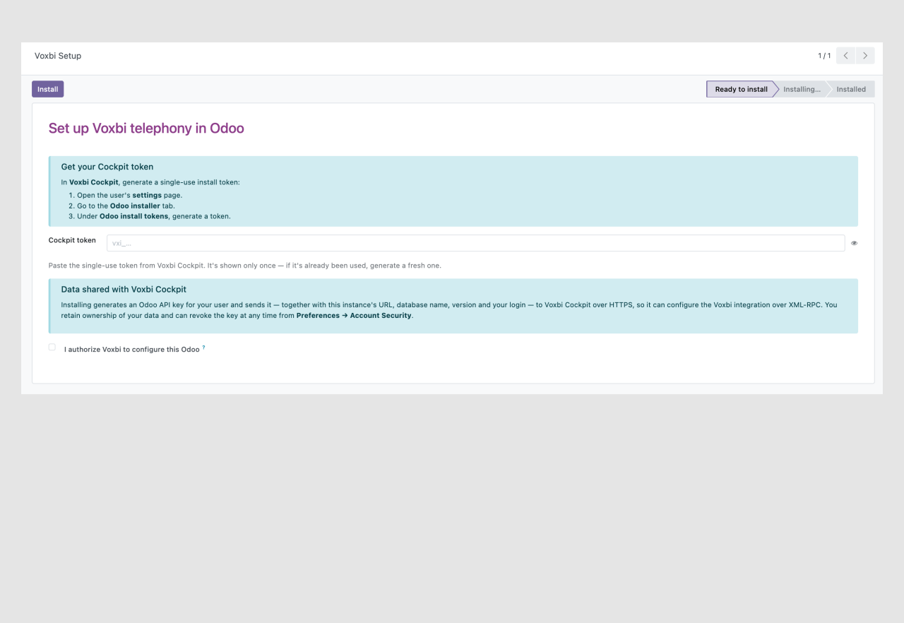
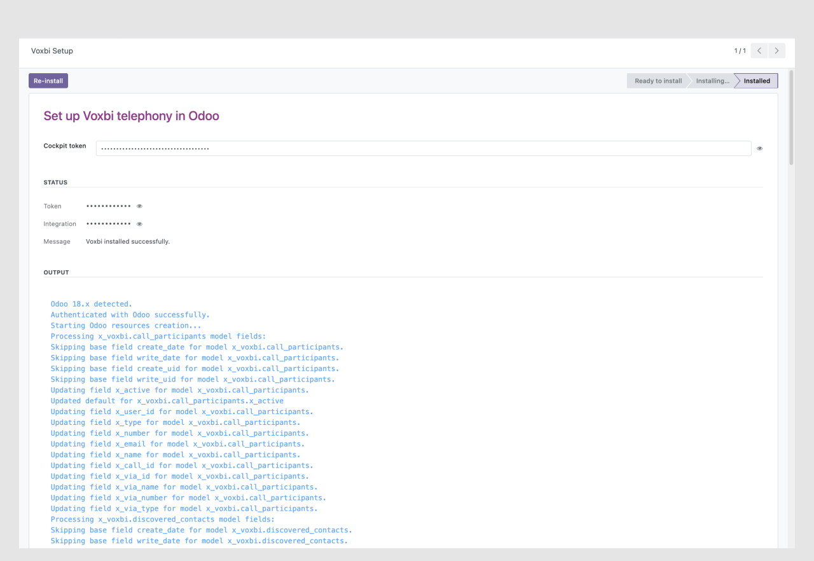

One token. The full Voxbi integration, configured for you — no credentials to type, no vendor ticket, no waiting.
Why this module
Connecting a phone system to your business software usually means raising a ticket, sharing credentials, and waiting on a vendor to wire it up.
This module flips that around. You paste a one-time token from Voxbi Cockpit and click Install — Cockpit then provisions and configures the whole Voxbi telephony integration in your Odoo for you, with progress streaming back in real time.
What this module does
Voxbi adds a Voxbi → Configuration wizard to your Odoo backend. You paste a one-time install token generated in Voxbi Cockpit and click Install. The wizard registers this Odoo with Voxbi Cockpit, which then provisions and configures the Voxbi telephony integration for your database — with installation progress streaming back into the wizard as it happens.
Key features
No credentials to type. Generate a single-use token in Voxbi Cockpit, paste it, and install. Each token works once and can be revoked at any time.
The wizard polls the install status and shows a color-coded log console, so you can watch the provisioning happen step by step.
Opt in to push SIP settings into Odoo's VoIP module after install, or keep your existing VoIP configuration untouched.
The setup wizard is restricted to Settings administrators. Connection identifiers are masked in the UI by default.
How it works


External service & data sharing
This module requires Voxbi Cockpit, an external service operated by Mixvoip SA, to provision the Voxbi integration. When you click Install, the module asks for your explicit authorization and then sends the following to Voxbi Cockpit over an encrypted (HTTPS) connection:
The generated API key can be revoked at any time from the administrator's Preferences → Account Security. You retain full ownership of your data. A Voxbi account and an active Voxbi subscription are required to use this integration.